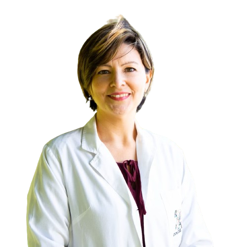
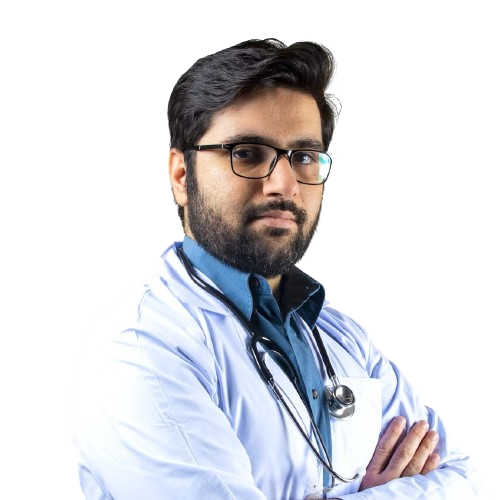
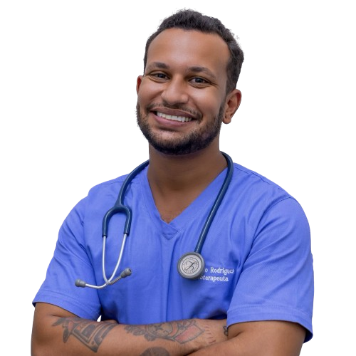

Quiénes somos
Nuestro Instituto está conformado por profesionales de la salud con
una excelente formación en Especialidades clínicas.
Nos especializamos en la evaluación clínica y buscamos dar solución a
cuadros clínicos complejos.
Nuestro staff
Dra. Marina Fernandez - Especialista en Medicina Interna y gerontología
Dr. Juan Rodriguez - Especialista en Reumatología
Dra. Sofía Perez - Especialista en Infectología
Dr. Manuel Salazar - Especialista en Clínica Médica
Dra. Susana Gomez - Especialista en Hematología